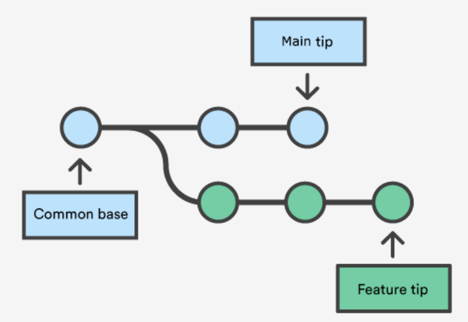
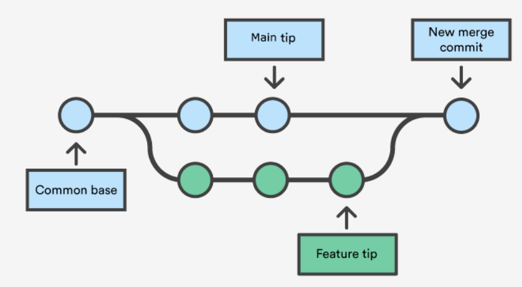
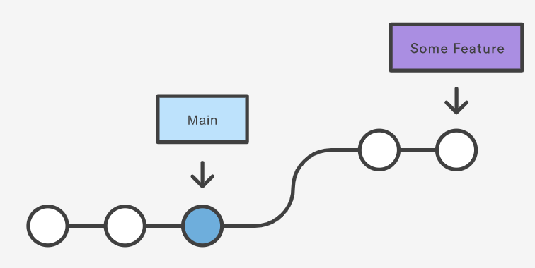
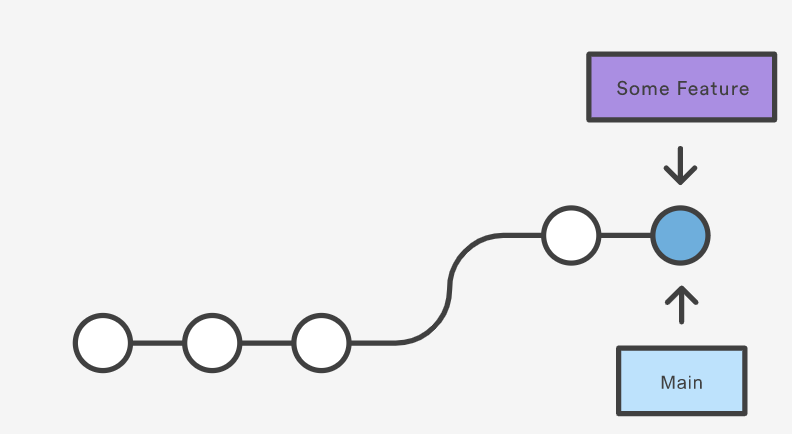
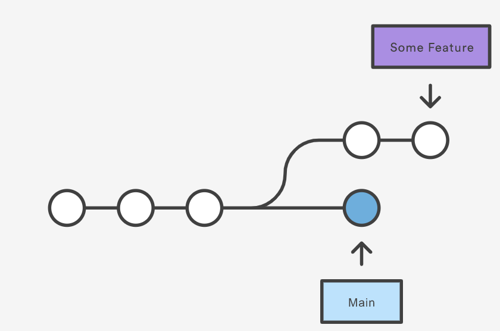
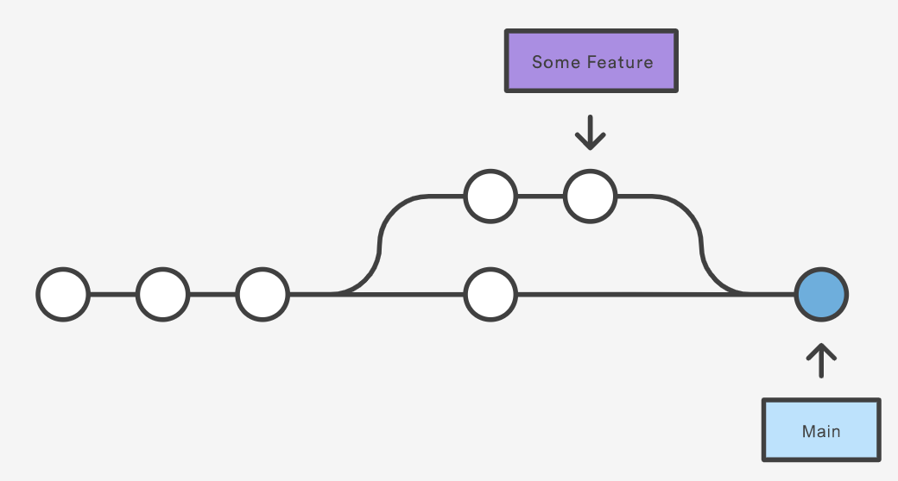

Mit dem Befehl "git merge" werden mehrere Commit-Abfolgen in einen einheitlichen Verlauf zusammengeführt.
Meist wird der Befehl dafür genutzt, zwei Branches miteinander zu vereinen.
Mergen erzeugt einen speziellen Commit der zwei Vorgänger besitzt.
Nach dem Merge enthält jeder der gemergten Branches die gesamten Informationen (und nicht lediglich die Informationen des jeweiligen Branches).
Durchführung eines Merges
Bestätigen des Merge-Ziel-Branches
Vor der Durchführung des Merges muss HEAD auf den Bereich verweisen, welcher das Ziel des Merge-Prozesses ist.
Dies kann durch den Befehl "git status" überprüft werden.
Wenn HEAD nicht auf einen anderen Branch verweist, muss der Branch mit "git checkout" gewechselt werden.
Abrufen der neuesten Remote-Commits
Der Merging-Branch und der Merge-Ziel-Branch sollten mit den neuesten Remote-Änderungen aktualisiert werden.
Die neuesten Remote-Commits können mit dem Befehl "git fetch" gepullt werden.
Nachdem diese abgerufen wurden, sollte mit dem Befehl "git pull" überprüft werden, ob auch der main-Branch aktuell ist.
Das Mergen
Der tatsächliche Vorgang des Mergens, wird durch den Befehl "git merge" ausgeführt.
Dabei muss der Name des Branches verwendet werden, der in den Merge-Ziel-Branch gemergt wird.

Diese Abbildung zeigt die beiden Branches, die durch Mergen zusammengeführt werden sollen.

Diese Abbildung zeigt die beiden Branches nach dem Merge.
Verschiedene Arten des Mergens
Fast-Forward-Merge
Diese Art des Mergens wird verwendet, wenn ein linearer Pfad von der Spitze des aktuellen Branches zum Ziel-Branch exisitiert.
Git muss hier nicht die Branches tatsächlich zusammenführen, sondern nur die Spitze des aktuellen Branches an die Spitze des Ziel-Branches verschieben.
Dies kombiniert die Verläufe miteinander und alle Commits aus dem Ziel-Branch sind so auch über den aktuellen Branch zugänglich

Zustand vor Durchführung des Fast-Forward-Merges

Zustand nach Durchführung des Fast-Forward-Merges
3-Way-Merge
Diese Art des Mergens wird genutzt, wenn es keinen linearen Pfad zum Ziel-Branch gibt.
Es existiert ein spezieller Commit für 3-Way-Merges, der die beiden Verläufe miteinander verknüpft.
Der Name "3-Way-Merge" geht auf die Anzahl der Commits zurück, die git für die Durchführung des Merge-Commits benötigt (je 1 Commit für die beiden Branch-Spitzen, 1 Commit für ihren gemeinsamen Vorgänger).

Zustand vor Durchführung des 3-Way-Merges

Zustand vor Durchführung des 3-Way-Merges